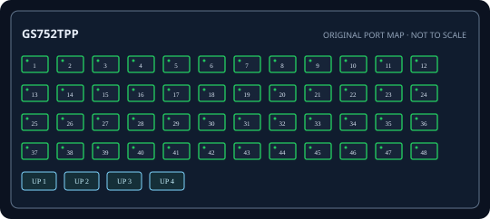

[ EXACT MODEL / SKU ]
NETGEAR GS752TPP 48-Port Gigabit PoE+ Smart Managed Pro Switch
Exact physical interfaces and their nominal link rates are documented below. Link rates are not measured application throughput.

IDENTIFICATION: Confirm model/SKU, hardware revision, power supply and firmware on the physical unit. No measured throughput is asserted.
Model-specific specifications and compatibility
| Exact model / SKU | GS752TPP 48-Port Gigabit PoE+ Smart Managed Pro Switch; manufacturer SKU GS752TPP. |
|---|---|
| Hardware revision | Exact GS752TPP model, not GS752TP or GS752TPv2. Verify label version; PoE and firmware details are revision-specific. |
| Port count and rates | 48 x 10/100/1000BASE-T RJ-45 PoE ports. Rates are per interface; aggregate full-duplex capacity is not a single-port throughput figure. |
| PoE standard and budget | IEEE 802.3af/at PoE/PoE+ on copper ports; up to 760 W aggregate budget for GS752TPP. Check revision and port limits. |
| Uplinks | Four 1GbE SFP slots, not SFP+ or 10GbE. |
| Management and VLAN | NETGEAR Smart Managed Pro web management; 802.1Q VLAN, LACP, ACL, QoS and SNMP depend on hardware/firmware. |
| Power input | Internal AC input 100-240 V, 50/60 Hz; grounded cord. 760 W is aggregate PoE ceiling, not per-port output. |
| Power and compatibility | Rack mount; verify unit revision, firmware and supported 1Gb SFP; sum PoE endpoints within total and per-port limits. |
| Measured performance | No independently measured packet-forwarding rate or latency is claimed. Test with documented firmware, packet sizes, port pairs, VLAN/QoS configuration and traffic direction if required. |
Installation and identification notes
- Record SKU, revision, PSU label, serial, firmware and port mapping before commissioning; similar model suffixes may use different power and firmware.
- Match copper cable category/length and SFP rate, wavelength, fiber type and reach to both ends of every link.
- For PoE models, confirm endpoint IEEE class negotiation and calculate demand against both per-port limits and aggregate budget.
- Preserve configuration backups and vendor documentation without publishing credentials or private network data.
Manufacturer datasheets and manuals
- NETGEAR official GS752TPP support and documentationOfficial NETGEAR model/series support or specification source; confirm revision against the unit label.
- NETGEAR official GS752TPP datasheetOfficial NETGEAR model/series support or specification source; confirm revision against the unit label.
Use the exact label revision to choose current firmware, installation manuals and platform compatibility notes.